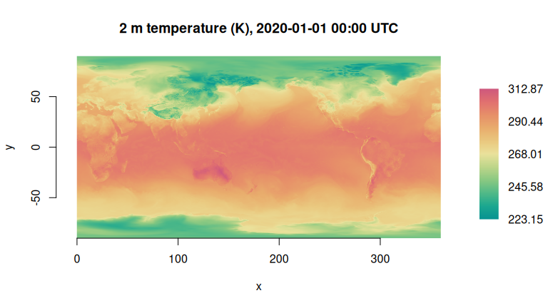

xrdbi is a DBI backend for xarray. The “database” is an xarray Dataset in a live Python session, reached through reticulate, and a connection is a handle to it:
- tables are the Dataset’s variables
- fields are a variable’s dimensions and coordinates, then the variable itself
- a statement is a Python expression over
ds, and its result arrives as tidy rows, one per cell
dplyr verbs compile to the same statements, xr_raster() renders a slab as a raster, and xr_chunks() maps the storage chunks a selection touches. Anything xarray can open is in reach: netCDF and HDF5 files, zarr in the cloud, virtual and icechunk stores, and, through the gdalxarray engine, anything GDAL reads.
Documentation: https://mdsumner.github.io/xrdbi/
Installation
# install.packages("pak")
pak::pak("mdsumner/xrdbi")xrdbi declares its core Python requirements, xarray and netCDF4, when it loads, so with no Python configured, reticulate provisions them on first use. Other engines and file systems are declared the same way, as in the example below. To use your own Python, conda or pixi, or the gdal-r-python image, see Python environments.
Example
The ARCO ERA5 reanalysis on Google Cloud is one zarr store: 273 variables, hourly on a quarter-degree global grid.
library(DBI)
library(xrdbi)
reticulate::py_require(c("zarr", "gcsfs"))
era <- "gs://gcp-public-data-arco-era5/ar/full_37-1h-0p25deg-chunk-1.zarr-v3"
con <- dbConnect(xarray(), era, engine = "zarr",
storage_options = reticulate::dict(token = "anon"))
con
#> <XarrayConnection>
#> dsn: gs://gcp-public-data-arco-era5/ar/full_37-1h-0p25deg-chunk-1.zarr-v3
#> dims: time: 1323648, latitude: 721, longitude: 1440, level: 37
#> vars: 100m_u_component_of_wind, 100m_v_component_of_wind, ... (273 total)
dbListFields(con, "2m_temperature")
#> [1] "time" "latitude" "longitude" "2m_temperature"A statement is xarray’s own selection language. One value, near Hobart:
dbGetQuery(con,
"ds['2m_temperature'].sel(time='2020-01-01T00', latitude=-42.75, longitude=147.25)")
#> latitude longitude time 2m_temperature
#> 1 -42.75 147.25 2020-01-01 290.9427dplyr filters compile to a selection, oriented to each coordinate’s direction (latitude here runs north to south), and show_query() prints the statement:
library(dplyr, warn.conflicts = FALSE)
tas <- tbl(con, "2m_temperature") |>
filter(time == as.POSIXct("2020-01-01 00:00", tz = "UTC"),
latitude > -43.5, latitude < -42, longitude > 146.5, longitude < 148)
show_query(tas)
#> ds['2m_temperature'].sel(latitude=slice(-42, -43.5), longitude=slice(146.5, 148), time='2020-01-01T00:00:00').pipe(lambda a: a.isel(latitude=(a['latitude'].to_index() > -43.5) & (a['latitude'].to_index() < -42), longitude=(a['longitude'].to_index() > 146.5) & (a['longitude'].to_index() < 148)))
collect(tas)
#> # A tibble: 25 × 4
#> latitude longitude time `2m_temperature`
#> <dbl> <dbl> <dttm> <dbl>
#> 1 -42.25 146.75 2020-01-01 00:00:00 287.470
#> 2 -42.25 147 2020-01-01 00:00:00 288.478
#> 3 -42.25 147.25 2020-01-01 00:00:00 290.044
#> 4 -42.25 147.5 2020-01-01 00:00:00 291.181
#> 5 -42.25 147.75 2020-01-01 00:00:00 292.700
#> 6 -42.5 146.75 2020-01-01 00:00:00 287.864
#> 7 -42.5 147 2020-01-01 00:00:00 289.038
#> 8 -42.5 147.25 2020-01-01 00:00:00 290.086
#> 9 -42.5 147.5 2020-01-01 00:00:00 291.287
#> 10 -42.5 147.75 2020-01-01 00:00:00 292.118
#> # ℹ 15 more rowsEvery read is sized before it happens, and refused above a limit:
try(dbReadTable(con, "2m_temperature"))
#> Error : materializing 1,374,264,299,520 cells exceeds the guard (10,000,000); subset first, raise options(xrdbi.max_cells=), or use force = TRUEOne hour of the whole globe is one stored chunk, and xr_raster() renders it as a raster with its georeferencing, ready for gdalraster:
r <- xr_raster(con, "ds['2m_temperature'].sel(time='2020-01-01T00')")
temps <- function(x) rgb(colorRamp(hcl.colors(11, "Temps"))(x), maxColorValue = 255)
gdalraster::plot_raster(r, col_map_fn = temps, legend = TRUE,
main = "2 m temperature (K), 2020-01-01 00:00 UTC")
dbDisconnect(con)Learn more
Get started works through connections, statements, parameters, dplyr and rasters on a small bundled file. Then:
- Querying: Querying with dplyr (how each verb compiles, and what gets read), Parameters (R values into statements by name), From arrays to rows (the shape and types of results, and when work happens) and Data sources (netCDF over HTTPS, many files, zarr on Google Cloud and S3, GDAL rasters and VRTs, icechunk)
- Grids and geometry: Rasters, Chunk maps and Curvilinear grids and vector cubes
- Python environments and the Design notes
In R, ?xrdbi is the overview: how xarray maps to DBI, the functions by task, and the options.
Related
- DBI for xarray, the design note, which also sketches the chunk-level relation of an array store: chunk keys, byte ranges and encoded blobs
- storecard, metadata-only descriptions of array stores
- Regular in what?, on grids, frames and the curvilinear confusion